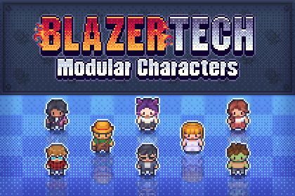
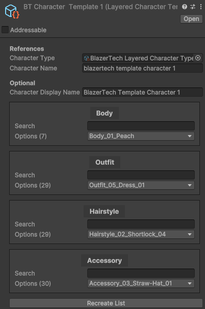

Built-In Characters
BlazerTech Modular Characters
Sample modular characters are included within the BlazerTech Character Management System. These characters were made to match the style of the Modern Series created by LimeZu.
These characters are modular and consist of 4 layers:
- Body (7 Options)
- Outfit (28 Options)
- Hairstyle (28 Options)
- Accessory (29 Options)
A Layered Character Type and Unified Character Type are pre-setup in the /BlazerTech Modular Characters subfolder. The Unified Character Type contains a few premade characters created by combining random options of each of the 4 layers.
The BlazerTech Modular Characters were creating by Jammie. Check out more of his work here!
Tip
Upon the full release of the BlazerTech Character Management System these characters will also be available for purchase separately at a discounted price.
Character Usage
The easiest way to create and use a BlazerTech character is to create a character template. It's basically we a blueprint for the character which we can then use to create the character later during runtime.
To create a character template right click the Project window and navigate to Create > BlazerTech > Character Management System > Character Templates > Layered Character Template.
Once created; assign the BlazerTech Layered Character Type to the Character Type field. A list will appear with 4 entries, one for each layer. Assign the option you want to use for each layer of the character.
When you want to use your template add the Layered Character Template Renderer component to a game object and assign a reference to the Layered Character Template you just created.
Then enter play mode and you'll see the character you created from the template.